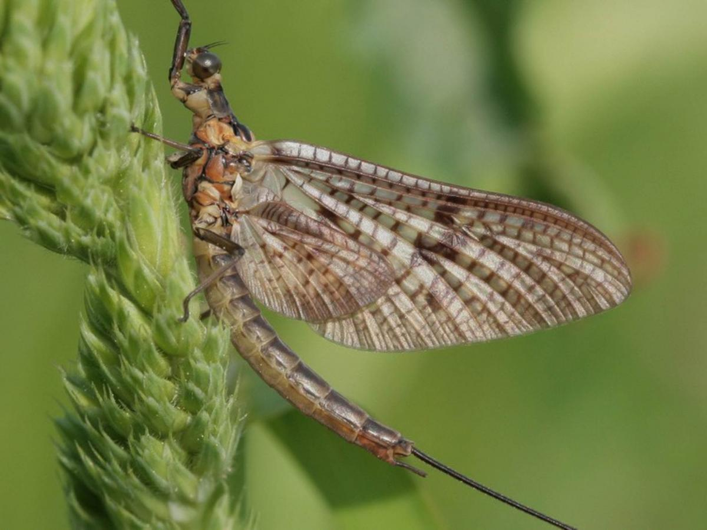
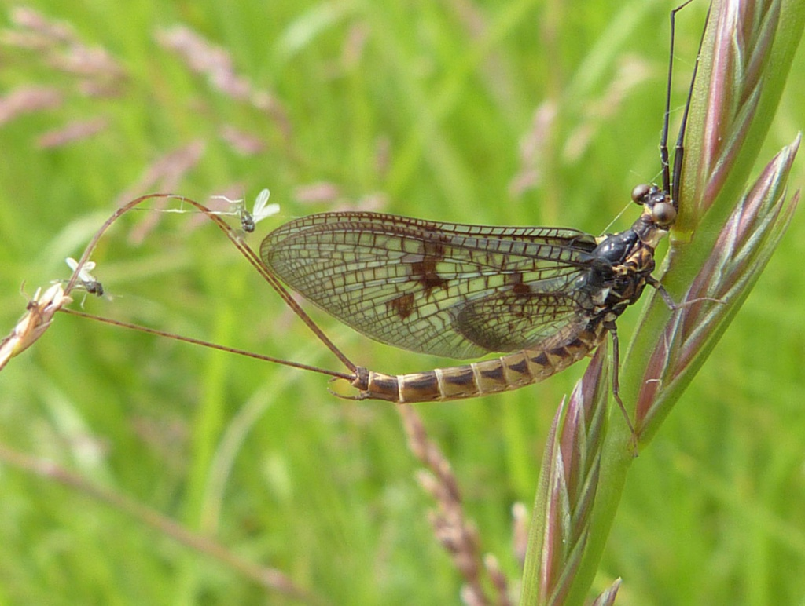
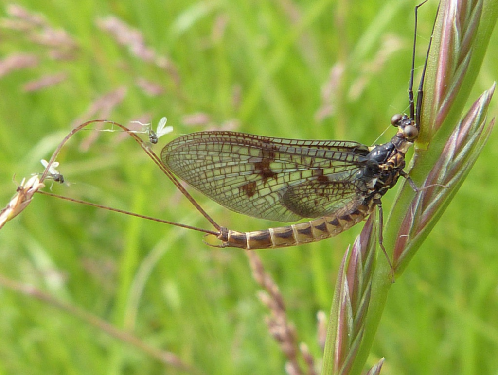

Éphémères
généralement une durée de vie très courte, moins d'un jour, voire seulement quelques heures, d'où leur nom d'éphémère qui veut dire « qui ne dure pas ». Les éphémères forment un groupe, l'ordre des éphéméroptères (nom scientifique : Ephemeroptera), qui rassemblent environ 3000 espèces différentes, dont 340 en Europe. Les éphémères ont de longues ailes membraneuses, qui ressemblent un peu à celles des libellules. D'ailleurs, les éphémères sont les cousines des odonates, c'est-à-dire le groupe des libellules et des demoiselles.
Les éphémères vivent à proximité des cours d'eau, où elles pondent leurs œufs, et où vivent leurs larves. En fait, il est faux de dire que les éphémères ne vivent pas longtemps, car leurs larves peuvent vivre plus longtemps, jusqu'à trois ans. Et puis, elles se métamorphosent en adulte, se reproduisent, et meurent.
Finalement, tout se passe comme si l'éphémère était un insecte aquatique, qui, juste avant de mourir, se métamorphosait en adulte volant pour se reproduire avant de disparaître.
Les larves d'éphémères vivent dans les mares, et les ruisseaux d'eau froide et limpide. On les appelle « patache », mais ce nom est aussi utilisé pour décrire les larves d'autres insectes aquatiques, comme les perles et les phryganes. Elles n'aiment pas du tout la pollution, et meurent si l'eau est trop polluée. La larve d'éphémère se nourrit des petites algues qui poussent sur les cailloux, dans les rivières. L'éphémère adulte, elle, ne se nourrit pas : elle ne vit pas assez longtemps pour ça, et n'en a pas besoin. D'ailleurs, elle ne possède ni bouche, ni tube digestif.
 

/ Milieu de vie
Les larves d'éphémère, tout comme les larves de phrygane et de perle, vivent dans une eau de bonne qualité, il n'y a pas ou peu de pollution et l'eau est bien oxygénée (il y a beaucoup d'oxygène). Il s'agit de l'un des bioindicateurs utilisés en France pour vérifier la qualité de l'eau.